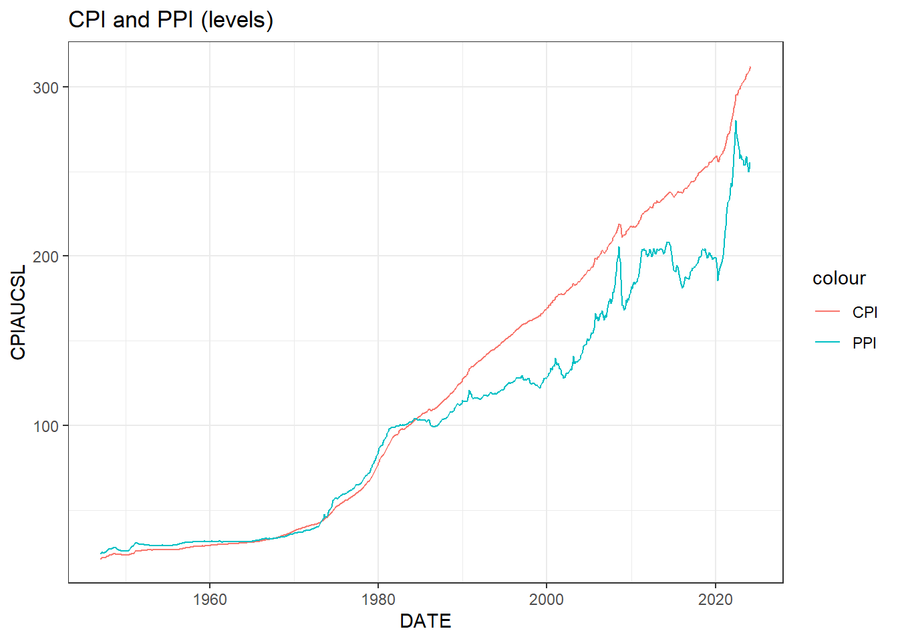
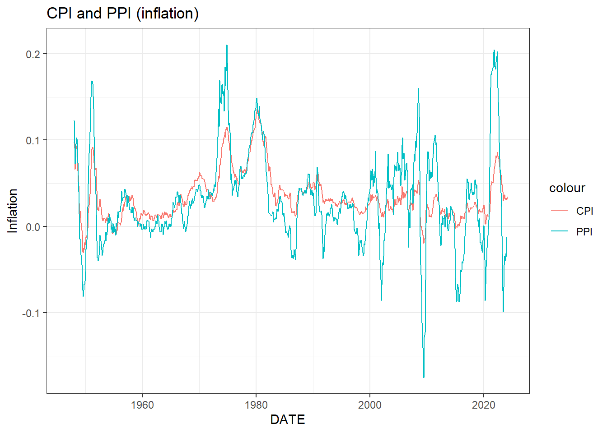
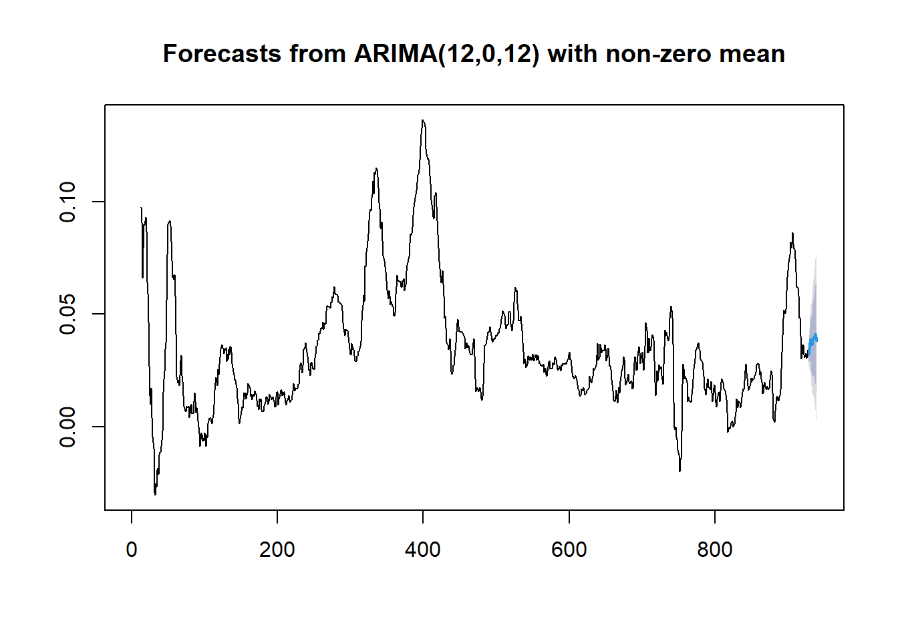
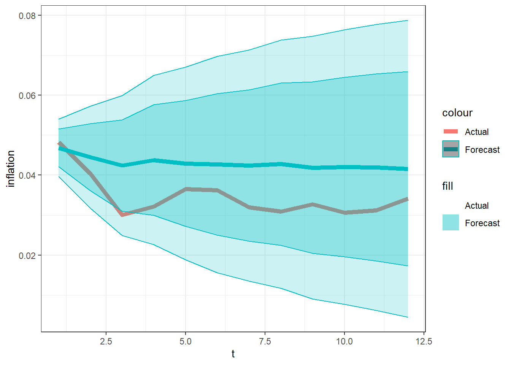
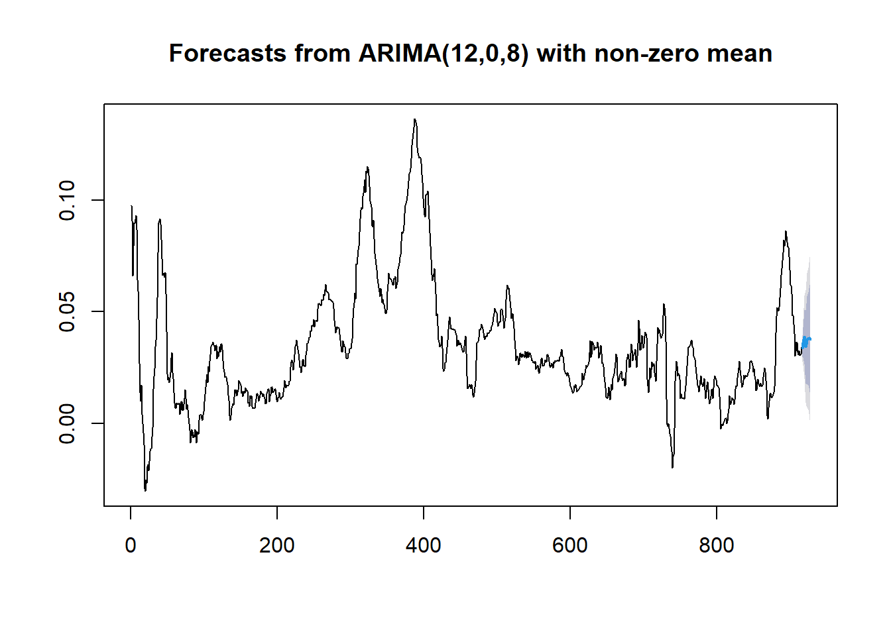
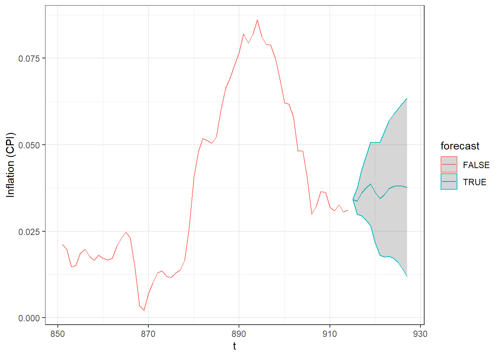
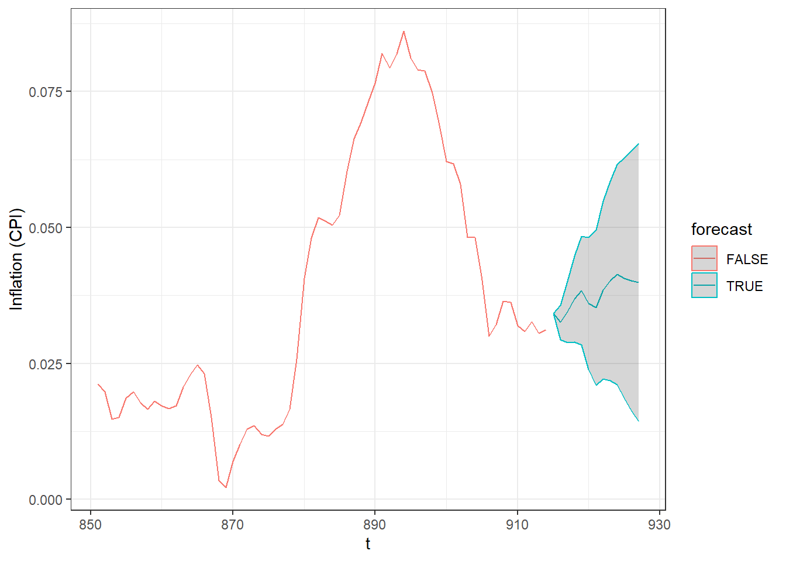

15 Time series – Forecasting
15.1 Prediction and forecasting
For most of this course, we have focused on estimating things: sample means, probabilities, causal effects, and so on. However once we get into modeling times series data, we might also be interested in prediction: or models tell us, given some information about things now, what is going to happen tomorrow, or next week, or in a year? Note that this language is way different from how we think about causal inference. When we seek the right (i.e. causal) marginal effect, we want to ask questions like “if I change \(X\), what will this do to \(Y\)?”, but with prediction, we might not actually care about the causal mechanism, we just want the number. Fortunately for us, most of our knowledge of OLS and the like follows through with point predictions. However we need to treat randomness slightly differently.
15.1.1 Example: Prediction with univariate problems
Suppose that we have a dataset of \(N\) iid observations of \(Y_i\): \(\{Y_i\}_{i=1}^N\). We are going to come across another \(Y\) in the future, call it \(Y_{N+1}\), and we’d like to have some kind of idea what it will be. You might be tempted, and you’d also be on the right track, to take the sample mean of the \(N\) \(Y\)s that we already have, and use this as our {} of \(Y_{N+1}\): \[\begin{align} \hat Y_{N+1}=\frac 1N\sum_{i=1}^NY_i=\bar Y \end{align}\] This is a great place to start! In fact, if you were going to be making a decision based on a point prediction, and your payoff of this decision was decreasing in the mean squared error of your prediction, i.e. \(E[(\hat Y_{N+1}-Y_{N+1})^2]\), then this would be {} good.
But being a good econometrician, you also want to eYpress some level of uncertainty in your prediction. Again, you might be tempted to report something like the confidence interval: \[\begin{align} \hat Y_{N+1}&\pm 1.96 \sqrt{\frac{1}{N}s^2},\quad s^2=\frac 1N\sum_{i=1}^N(Y_i-\bar Y)^2 \end{align}\] which would be nice if it was correct, but you’d be vastly overstating how much you know about \(Y_{N+1}\). The problem is that this thing is an expression of our uncertainty about the population {}, not an expression of our uncertainty about \(Y_{N+1}\). If it helps, note that as \(N\) gets large, this confidence interval collapses about the point prediction, which would be absolutely awesome: just collect a lot of data, and we’ll be able to predict everything perfectly! The trouble is we really want to account for the randomness associated with getting a new draw of \(Y\). This is a draw from the population distribution of \(Y\), {} a draw from the sampling distribution of \(\bar Y\).
One fairly reasonable thing to do would therefore be to use the 2.5th and 97.5th percentiles of or sample for the prediction interval. As \(N\to\infty\), these plim to the 2.5th and 97.5th percentiles of the population distribution, and so we are literally (and consistently) estimating two points for which \(Y\) has a 95% chance of falling between. Alternatively, we could get a bit more fancy and calculate the smallest interval that covers 95% of our data., however if the distribution is symmetric and single-peaked, we will be calculating the same thing.
Another popular way of doing this is to assume that the data come from a Normal distribution (think about whether this is a good assumption for your own application, it probably won’t be). If this is the case, we can use the sample mean \(\bar Y\) and variance \(s^2\) to claim that: \[\begin{align} Y_{N+1}\sim N(\mu,\sigma^2)\implies Y_{N+1}\stackrel{\text{approx}}{\sim}N\left(\bar Y, s^2\right) \end{align}\] Note that there are three sources of randomness here:
- \(Y_{N+1}\) is (assumed to be) normally distributed with mean \(\mu\) and variance \(\sigma^2\)
- We don’t know \(\mu\), but we have \(\bar Y\), an estimate of it, which if \(N\) is large enough will be approximately \(N(\mu,\sigma^2/N)\)
- We don’t know \(\sigma^2\), but we have \(s^2\), an estimate of it. It can be shown that \((N-1)s^2/\sigma^2\xrightarrow[]{d}\chi^2_{N-1}\). Let’s assume that this process is negligible (basically you get \(t\) critical values rather than normal ones)
So we have: \[\begin{align} \frac{Y_{N+1}-\bar Y}{\sqrt{s^2}}&=\frac{(Y_{N+1}-\mu)-(\bar Y-\mu)}{\sqrt{s^2}}\\ &\xrightarrow[]{d}\frac{(Y_{N+1}-\mu)-(\bar Y-\mu)}{\sqrt{\sigma^2}}\\ &\stackrel{\text{approx}}{\sim}N(0,1)-N(0,1/N)\\ &=N\left(0,1+1/N\right)\\ \implies 0.95&\approx \Pr\left[\left|Y_{N+1}-\bar Y\right| \leq 1.96\sqrt{s^2(1+1/N)}\right] \end{align}\] Note with the above expression, as \(N\to\infty\) the \(1/N\) term goes to zero, which reflects us knowing the population mean for sure.
15.1.2 Example: Prediction in bivariate OLS
OK, but what if we have some \(X\)s as well? To begin with, our point prediction can remain the same, we simply condition on \(X\) because for bivariate OLS (hopefully the multivariate case is obvious): \[\begin{align} \hat{Y_{N+1}}\mid X_{N+1}&=\widehat{E[Y_{N+1}\mid X_{N+1}]}=\hat\beta_0+\hat\beta_1X_{N+1} \end{align}\] Again, our prediction interval needs to take into account that we are uncertain about the parameters \(\beta_0\) and \(\beta_1\), {} that we are getting a new draw of \(Y\). In the context of OLS, we are drawing a new error term.
Note that: \[\begin{align} \hat Y_{N+1}-Y_{N+1}&=\hat\beta_0+\hat\beta_1X_{N+1}-\beta_0-\beta_1 X_{N+1}-\epsilon_{N+1}\\ &=\underbrace{(\hat\beta_0-\beta_0)+(\hat\beta_1-\beta_1)X_{N+1}}_\text{$B=$error with mean prediction}-\epsilon_{N+1}\\ %%%% &=\underbrace{(\hat\alpha_0-\alpha_0)+(\hat\beta_1-\beta_1)(X_{N+1}-\bar X)}_\text{$B=$error with mean prediction}-\epsilon_{N+1} \end{align}\] where we make the substitution \(\alpha_0=\beta_0+\bar X \beta_1\). Note that \(B\) and \(\epsilon_{N+1}\) are (assumed to be) independent, we can analyze them separately. \(B\) is the component of the prediction error associated with us not knowing the conditional mean. We can calculate its variance in the same way we’d calculate the variance of a linear combination of the parameters. Noting that the population \(\beta\)s are constants, the estimators are unbiased, and the following results:
\[\begin{align} \hat\alpha_0-\alpha_0&\sim N(0,\sigma^2/N)\\ \hat\beta_1-\beta_1&\sim N\left(0,\frac{\sigma^2}{\sum_i(X_i-\bar X)^2}\right) \end{align}\] and all of these are independent, so: \[\begin{align} V[\hat Y_{N+1}]&=V\left[\hat\alpha_0+\hat\beta_1(X_{N+1}-\bar X)-\epsilon_{N+1}\right]\\ %%% &=V[\hat\alpha_0]+V[\hat\beta_1](X_{N+1}-\bar X)^2+V[\epsilon_{N+1}]\\ &=\frac{\sigma^2}{N}+\frac{\sigma^2}{\sum_i(X_i-\bar X)}(X_{N+1}-\bar X)^2+\sigma^2\\ &=\sigma^2\left[\frac{1}{N}+\frac{(X_{N+1}-\bar X)^2}{\sum_i(X_i-\bar X)}+1\right] \end{align}\] which is almost like our expression for the unconditional prediction variance in the previous example. The middle term is the extra bit, which states that our prediction becomes less accurate the further away from the mean of \(X\) that we want to make predictions. Note, however, that this terms would also appear in our confidence interval for the population mean conditional on \(X\). The first two terms will go to zero as \(N\to\infty\), and we are just left with \(V[\hat Y_{N+1}]\approx \sigma^2\) for large \(N\).
15.2 Cross-validation
In the previous chapter, we used the AIC as a way of selecting a model that would hopefully make good forecasts. While this method is computationally easy (R will calculate it by default when estimating an ARIMA model), it may not be appropriate for our needs. In particular, since AIC assesses our models’ performance on data that have been used to estimate the model, model selection using AIC is not mimicking the process we will eventually be using to make our forecast. Instead, this chapter will teach you about cross-validation, which will hopefully be a much more satisfactory approach for selecting a model for making forecasts.
15.3 Example: CPI and PPI
Suppose that we wish to forecast inflation, as measured by the Consumer Price Index (CPI) using an ARIMA model. In particular, we would like to forecast monthly inflation for twelve months.
To begin with, here is some code importing the data, and wrangling it into a usable format.
library(tidyverse)
library(forecast)
CPI<-read.csv("data/CPIAUCSL.csv")
PPI<-read.csv("data/PPIACO.csv")
D<-CPI |>
left_join(PPI,by="DATE") |>
mutate(DATE = DATE |> ymd())
D |> head() |> knitr::kable()| DATE | CPIAUCSL | PPIACO |
|---|---|---|
| 1947-01-01 | 21.48 | 24.5 |
| 1947-02-01 | 21.62 | 24.7 |
| 1947-03-01 | 22.00 | 25.3 |
| 1947-04-01 | 22.00 | 25.1 |
| 1947-05-01 | 21.95 | 25.0 |
| 1947-06-01 | 22.08 | 25.0 |
(
ggplot(data=D,aes(x=DATE))
+geom_line(aes(y=CPIAUCSL,color="CPI"))
+geom_line(aes(y=PPIACO,color="PPI"))
+theme_bw()
+labs(title = "CPI and PPI (levels)")
)
D <- D |>
mutate(CPIinflation = log(CPIAUCSL)-log(lag(CPIAUCSL,n=12)),
PPIinflation = log(PPIACO)-log(lag(PPIACO,n=12))
)
(
ggplot(data=D,aes(x=DATE))
+geom_line(aes(y=CPIinflation,color="CPI"))
+geom_line(aes(y=PPIinflation,color="PPI"))
+ylab("Inflation")
+theme_bw()
+labs(title = "CPI and PPI (inflation)")
)
Once we have decided on a model, it is fairly easy to make this kind of forecast:

However even with just one additional explanatory variable, there are many models that we could choose from. Using cross-validation, we will investigate every combination model based on the following permutations:
- Between zero and 12 AR and MA lags
- Including or not including lagged PPI as an explanatory variable
We will start by just focusing on the AR and MA components of the model, then build it up to include PPI as an additional explanatory variable.
15.3.1 Using just AR and MA components
Let’s start by trying to forecast the final 12 months of data that we have available. If we are using and \(ARMA(p,q)\), the code to estimate it is and make a forecast is
Y<-D$CPIinflation
Y<-Y[!is.na(Y)]
n<-Y |> length()
y<-Y[1:(n-12)]
p<-4
q<-5
model<-arima(y,order = c(p,0,q))
y_forecast<-forecast(model,h=12)And so our comparison for cross-validation is:
comparison<-cbind(tibble(actual = Y[(n-12+1):n]),y_forecast) |> mutate(t = 1:n())
(
ggplot(comparison,aes(x=t))
+geom_line(aes(y=actual,color="Actual",fill = "Actual"),linewidth=2)
+geom_line(aes(y=`Point Forecast`,color="Forecast",fill = "Forecast"),linewidth=2)
+geom_ribbon(aes(ymin=`Lo 95`,ymax = `Hi 95`,color="Forecast", fill = "Forecast"),alpha=0.2)
+geom_ribbon(aes(ymin=`Lo 80`,ymax = `Hi 80`,color="Forecast", fill = "Forecast"),alpha=0.3)
+ylab("inflation")
+theme_bw()
)
And our mean squared prediction error is:
## [1] 8.540633e-05Here is where things slow down a lot, so I am going to code up the rest as a script, and run it elsewhere.
library(tidyverse)
library(forecast)
D<-readRDS("data/CPI_PPI.rds")
Y<-D$CPIinflation
Y<-Y[!is.na(Y)]
n<-Y |> length()
y<-Y[1:(n-12)]
maxLags<-12
maxYears<-10
MSE<-tibble()
for (pp in 0:maxLags) {
for (qq in 0:maxLags) {
print(paste0("Evaluating ARMA(",pp,",",qq,") model"))
for (yy in 1:maxYears) {
# Training dataset: Use the last yy years of data
y<-Y[1:(n-12*yy)]
# Estimate the model
model<-arima(y,order = c(pp,0,qq),method="CSS")
# Forecast 12 months into the future
y_forecast<-forecast(model,h=12)
# Compare
comparison<-cbind(tibble(actual = Y[(n-12*yy+1):(n-12*yy+12)]),y_forecast) |> mutate(t = 1:n())
# Compute MSE
mse<-mean((comparison$actual-comparison$`Point Forecast`)^2)
# Store the results
MSE<-rbind(
MSE,
tibble(AR = pp,MA = qq,years = yy,mse = mse)
)
}
}
}
saveRDS(MSE,file="data/CPI_PPI_ARMAforecasting.rds")MSE<-readRDS("data/CPI_PPI_ARMAforecasting.rds")
MSEsummary<-(
MSE
|> group_by(AR,MA)
|> summarize(mse = mean(mse))
|> arrange(mse)
)## `summarise()` has grouped output by 'AR'. You can override using the `.groups`
## argument.## # A tibble: 1 × 3
## # Groups: AR [1]
## AR MA mse
## <int> <int> <dbl>
## 1 12 8 0.000115
fcst<-forecast(model,h=12)
d<-tibble(y = c(Y,fcst$mean),ymin = c(Y,fcst$lower[,1]),ymax = c(Y,fcst$upper[,1])) |> mutate(t = 1:n(),forecast = abs(t-n())<=12)
(
ggplot(d |> filter(t>850),aes(x=t,y=y,color=forecast,ymin=ymin,ymax=ymax))
+geom_line()
+theme_bw()
+geom_ribbon(alpha=0.2)
+ylab("Inflation (CPI)")
)
15.3.2 Incorporating some seasonality
Here I will just focus on estimating AR models. There is no reason one needs to exclude the MA components, but it will speed up the process in class. In particular, let’s focus attention on models with a fixed number of parameters, say 10. That is:
\[ \text{number of 1-period lags } + \text{ number of seasonal lags } = 10 \]
library(tidyverse)
library(forecast)
D<-readRDS("data/CPI_PPI.rds")
Y<-D$CPIinflation
Y<-Y[!is.na(Y)]
n<-Y |> length()
y<-Y[1:(n-12)]
maxLags<-10
maxYears<-10
MSE<-tibble()
for (pp in 0:maxLags) {
print(paste0("Evaluating model with ", pp ," 1-period lags and ",maxLags-pp," seasonal lags"))
for (yy in 1:maxYears) {
# Training dataset: Use the last yy years of data
y<-Y[1:(n-12*yy)]
# Estimate the model
model<-arima(y,order = c(pp,0,0),seasonal = list(order = c(maxLags-pp,0,0),period=12),method="CSS")
# Forecast 12 months into the future
y_forecast<-forecast(model,h=12)
# Compare
comparison<-cbind(tibble(actual = Y[(n-12*yy+1):(n-12*yy+12)]),y_forecast) |> mutate(t = 1:n())
# Compute MSE
mse<-mean((comparison$actual-comparison$`Point Forecast`)^2)
# Store the results
MSE<-rbind(
MSE,
tibble(AR = pp,years = yy,mse = mse)
)
}
}
saveRDS(MSE,file="data/CPI_PPI_ARMAforecasting_seasonal.rds")MSE<-readRDS("data/CPI_PPI_ARMAforecasting_seasonal.rds")
MSEsummary<-(
MSE
|> group_by(AR)
|> summarize(mse = mean(mse))
|> arrange(mse)
)
(selectedModel<-MSEsummary[1,])## # A tibble: 1 × 2
## AR mse
## <int> <dbl>
## 1 5 0.000171model<-arima(Y,order = c(selectedModel$AR,0,0),seasonal=list(order = c(10-selectedModel$AR,0,0),period=12),method="CSS")
plot(forecast(model,h=12))fcst<-forecast(model,h=12)
d<-tibble(y = c(Y,fcst$mean),ymin = c(Y,fcst$lower[,1]),ymax = c(Y,fcst$upper[,1])) |> mutate(t = 1:n(),forecast = abs(t-n())<=12)
(
ggplot(d |> filter(t>850),aes(x=t,y=y,color=forecast,ymin=ymin,ymax=ymax))
+geom_line()
+theme_bw()
+ylab("Inflation (CPI)")
+geom_ribbon(alpha=0.2)
)
15.3.3 Incorporating PPI inflation
X<-cbind(lag(D$PPIinflation,n=1),lag(D$PPIinflation,n=2),lag(D$PPIinflation,n=3))
fit<- arima(D$CPIinflation,order=c(2,0,2),xreg = X)
fit##
## Call:
## arima(x = D$CPIinflation, order = c(2, 0, 2), xreg = X)
##
## Coefficients:
## ar1 ar2 ma1 ma2 intercept X1 X2 X3
## 1.0216 -0.0447 0.2106 0.0566 0.0317 0.0872 0.0289 0.0184
## s.e. 0.7088 0.6930 0.7096 0.1799 0.0065 0.0140 0.0137 0.0147
##
## sigma^2 estimated as 1.379e-05: log likelihood = 3807.41, aic = -7596.81